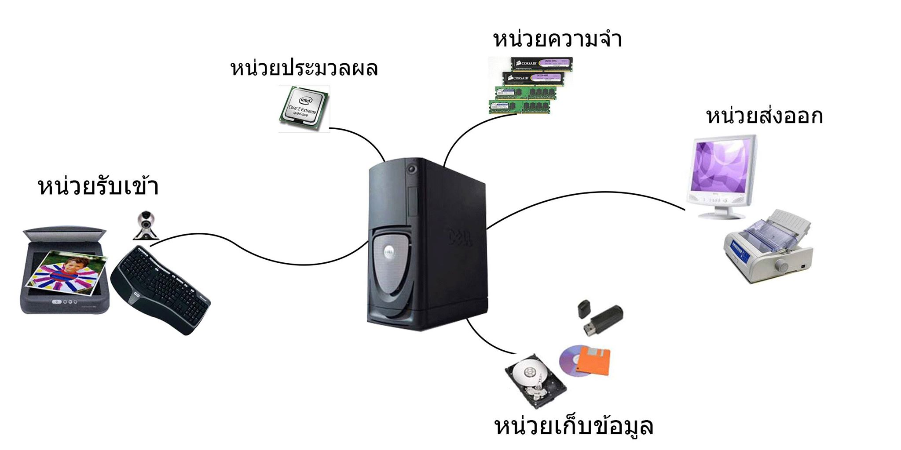
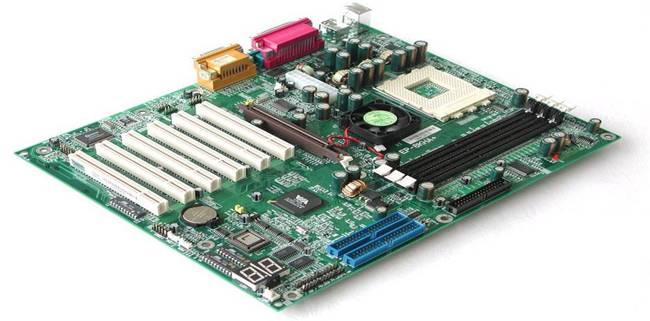
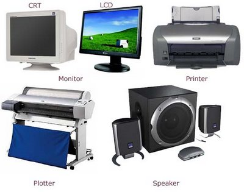

1.ฮาร์ดแวร์ (Hardware)
หมายถึงส่วนที่เป็นตัวเครื่องคอมพิวเตอร์และอุปกรณ์อื่นๆ ที่เกี่ยวข้อง ประกอบด้วยหน่วยต่างๆ 4 หน่วยดังนี้
1.1. หน่วยรับข้อมูล (Input Unit)
1.2. หน่วยประมวลผลกลาง (Central Processing Unit)
1.3. หน่วยความจำ (Memory Unit)
1.4. หน่วยแสดงผลลัพธ์ (Output Unit)

1.1. หน่วยรับข้อมูล
ทำหน้าที่ในการรับข้อมูลหรือคำสั่งจากภายนอกเข้าไปเก็บไว้ในหน่วยความจำ เพื่อเตรียมประมวลผลข้อมูลตามที่ต้องการ ซึ่งอุปกรณ์ที่ใช้ในการนำเข้าข้อมูลที่ใช้กันอยู่ตั้งแต่อดีตถึงปัจจุบันนั้นมีอยู่หลายประเภทด้วยกัน สำหรับอุปกรณ์ที่นิยมใช้ในปัจจุบันมีดังต่อไปนี้
- แป้นพิมพ์ (Keyboard)
– แทร็คบอล (Trackball)
– เมาส์ (Mouse)
– จอยสติ๊ก (Joystick)
– สแกนเนอร์ (Scanner)
– จอภาพสัมผัส (Touch Screen)
– กล้องดิจิตอล (Digital Camera)
1.2. หน่วยประมวลผลกลาง
ทำหน้าที่ในการประมวลผล แบ่งออกเป็น 2 ส่วนคือ
1.2.1. หน่วยควบคุม (control unit) ทำหน้าที่ควบคุมการทำงาน ควบคุมการเขียนอ่านข้อมูลระหว่างหน่วยความจำของซีพียู ควบคุมกลไกการทำงานทั้งหมดของระบบ ควบคุมจังหวะเวลา โดยมีสัญญาณนาฬิกาเป็นตัวกำหนดจังหวะการทำงาน
1.2.2. หน่วยคำนวณและตรรกะ (arithmetic and logic unit) เป็นหน่วยที่มีหน้าที่นำเอาข้อมูลที่เป็นตัวเลขฐานสองมาประมวลผลทางคณิตศาสตร์และตรรกะ เช่น การบวก การลบ การเปรียบเทียบ และ การสลับตัวเลข เป็นต้น การคำนวณทำได้เร็วตามจังหวะการควบคุมของหน่วยควบคุม

1.3. หน่วยความจำ
ทำหน้าที่ในการเก็บข้อมูลหรือคำสั่งต่างๆ ที่รับจากภายนอกเข้ามาเก็บไว้เพื่อประมวลผลและยังเก็บผลที่ได้จากการประมวลผลไว้เพื่อแสดงผลอีกด้วย แบ่งออกเป็น
1.3.1. หน่วยความจำหลัก – เครื่องคอมพิวเตอร์ทุกเครื่องต้องอาศัยหน่วยความจำหลักเพื่อใช้เก็บข้อมูลและคำสั่งซีพียูมีการทำงานเป็นวงรอบโดยการคำสั่งจากหน่วยความจำหลักมาแปลความหมายแล้วกระทำตาม เมื่อทำเสร็จก็จะนำผลลัพธ์มาเก็บในหน่วยคำจำหลัก ซีพียูจะกระทำตามขั้นตอนเช่นนี้เรื่อย ๆ ไปอย่างรวดเร็ว เรียกการทำงานลักษณะนี้ว่า วงรอบของคำสั่ง การแบ่งประเภทหน่วยความจำหลัก ถ้าแบ่งตามลักษณะการเก็บข้อมูล กล่าวคือถ้าเป็นหน่วยความจำที่เก็บข้อมูลไว้แล้ว หากไฟฟ้าดับ คือไม่มีไฟฟ้าจ่ายให้กับวงจรหน่วยความจำ ข้อมูลที่เก็บไว้จะหายไปหมด เรียกหน่วยความจำประเภทนี้ว่า หน่วยความจำแบบลบเลือนได้ (volatile memory) แต่ถ้าหน่วยความจำเก็บข้อมูลได้โดยไม่ขึ้นกับไฟฟ้าที่เลี้ยงวงจร ก็เรียกว่า หน่วยความจำไม่ลบเลือน (nonvolatile memory) แต่โดยทั่วไปการแบ่งประเภทของหน่วยความจำจะแบ่งตามสภาพการใช้งาน เช่น ถ้าเป็นหน่วยความจำที่เขียนหรืออ่านข้อมูลได้ การเขียนหรืออ่านจะเลือกที่ตำแหน่งใดก็ได้ เราเรียกหน่วยความจำประเภทนี้ว่า แรม (Random Access Memory: RAM) แรมเป็นหน่วยความจำแบบลบเลือนได้ และหากเป็นหน่วยความจำที่ซีพียูอ่านได้อย่างเดียว ไม่สามารถเขียนลงไปได้ ก็เรียกว่า รอม (Read Only Memory : ROM) รอมจึงเป็นหน่วยความจำที่เก็บข้อมูลหรือโปรแกรมไว้ถาวร เช่นเก็บโปรแกรมควบคุมการจัดการพื้นฐานของระบบไมโครคอมพิวเตอร์ (bios) รอมส่วนใหญ่เป็นหน่วยความจำไม่ลบเลือนแต่อาจยอมให้ผู้พัฒนาระบบลบข้อมูลและเขียนข้อมูลลงไปใหม่ได้ การลบข้อมูลนี้ต้องทำด้วยกรรมวิธีพิเศษ เช่น ใช้แสงอุลตราไวโลเล็ตฉายลงบนผิวซิลิกอน หน่วยความจำประเภทนี้มักจะมีช่องกระจกใสสำหรับฉายแสงขณะลบ และขณะใช้งานจะมีแผ่นกระดาษทึบปิดทับไว้ เรียกหน่วยความจำประเภทนี้ว่า อีพร็อม (Erasable Programmable Read Only Memory : EPROM)
1.3.2. หน่วยความจำสำรอง – ใช้เป็นส่วนเพิ่มหน่วยความจำให้มีขนาดใหญ่มากขึ้น ทำงานติดต่อยู่กับส่วนความจำหลัก โดยปกติแล้วหน่วยความจำสำรองจะมีความจุมากและมีราคาถูกกว่าหน่วยความจำหลัก แต่เรียกหาข้อมูลได้ช้ากว่า เช่น ฮาร์ดดิสก์, ฟลอบปี้ดิสก์
1.4. หน่วยแสดงผลลัพธ์
ทำหน้าที่ในการแสดงผลลัพธ์ที่ได้จากการคำนวณและประมวลผลในรูปแบบที่มนุษย์เข้าใจ สำหรับอุปกรณ์ที่ทำหน้าที่ในการแสดงผลนั้น ยกตัวอย่างเช่น
– จอภาพ (Monitor)
– เครื่องพิมพ์ (Printer)
– ลำโพง (Speaker)
– พล็อตเตอร์ (Plotter)

โครงสร้างระบบคอมพิวเตอร์
องค์ประกอบของคอมพิวเตอร์
วงจรการทำงานของคอมพิวเตอร์
ความหมายและความเป็นมา
คอมพิวเตอร์
สรุป โครงสร้างระบบคอมพิวเตอร์
ภาษาคอมพิวเตอร์
ข้อมูล ผู้จัดทำ